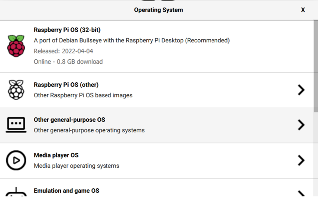
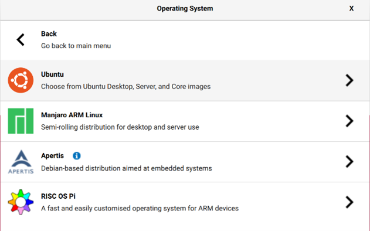
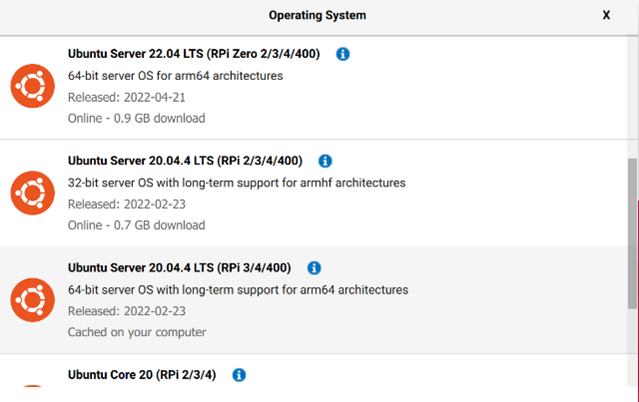
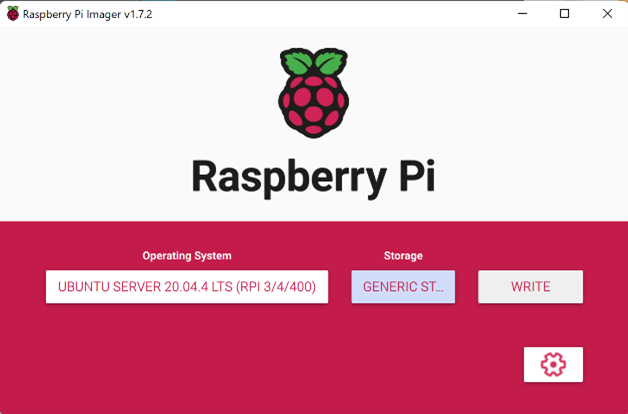

Installing Ubuntu server 20.04 on your Raspberry Pi
First of all you need a raspberry pi 3 or 4 (preferable 4) you also need a micro SD-card with more than 8GB of memory. Stick the empty SD-card in your computer you might need an adapter for this. Here we used the official raspberry pi imager you can download it here: www.raspberrypi.com/software/
Using the official raspberry pi imager select: Operating System Other general-purpose OS Ubuntu Ubuntu Server 20.04.4 LTS (RPi 3/4/400)
   After selecting the OS select a storage device the SD-card and press write to put the OS image on the SD-card. After that’s done you can pull out the SD-card out of your computer and insert it in the raspberry pi. If you plug power into the raspberry pi it should boot up with the new operating system.
To connect your raspberry to a Wi-Fi network you have to log in to your raspberry pi using a monitor and keyboard. Here you be setting up a static IP on the raspberry, to be able to SSH into the Pi.
Navigate to netplan
cd /etc/netplan
Remove the old file 50-cloud-init.yaml
sudo rm 50-cloud-init.yaml
Add a new file named 01-netcfg.yaml
sudo touch 01-netcfg.yaml
Edit 01-netcfg.yaml file
sudo nano 01-netcfg.yaml
it should contain the following information Tip: the file should not contain any tabs. Each jump is 2 spaces long. This file is based on a hotspot with ssid: RileyHotspot password: rileyriley
Press control + x then y to save the file and enter to exit out of the nano text editor
Then apply the changes
sudo netplan apply
In case you run into issues execute: following command to debug
sudo netplan --debug apply
Next navigate to cloud.cfg.d
cd /etc/cloud/cloud.cfg.d
Add a file named 99-disable-network-config.cfg
sudo touch 99-disable-network-config.cfg
Edit file
sudo nano 99-disable-network-config.cfg
It should contain the following information:
Press control + x then y to save the file and enter to exit out of the nano text editor
Reboot the pi to make sure everything works
sudo reboot
First we set the date and time good. To check this execute command:
date
If it's not correct you can set it by running command:
sudo apt update
You should also change your timezone
timedatectl set-timezone Europe/Amsterdam
Update again
sudo apt update
And also upgrade
sudo apt upgrade
This can take a while, you know when its done if you run sudo apt update and it says that there are no more packages that can be upgraded.
Then after that install ifconfig command tool this is helpful if you want to know the ip-adress of the Raspberry Pi
sudo apt install net-tools
You also might want to install nmap this is used to scan an ip-range to see which devices are on which ip-adress. To install it run command:
sudo apt install nmap
To scan an ip-range with a mask of 255.255.255.0 (24-bits) for example 192.168.137.X use command:
sudo nmap -sP 192.168.137.0/24
Here it wil scan all devices that are on the range from 192.168.137.0 and 192.168.137.255